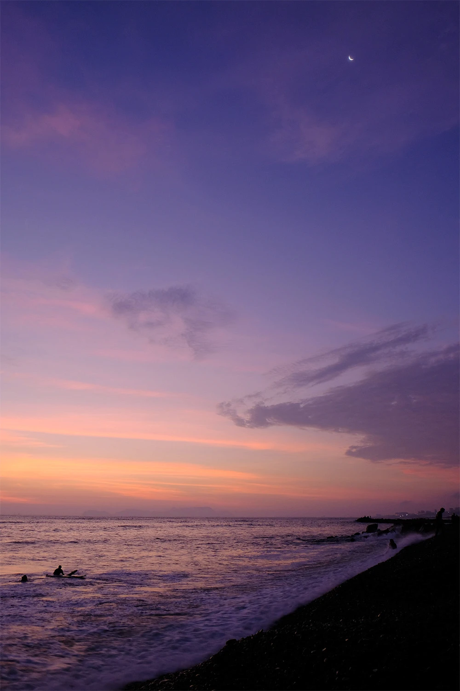

Artist and designer whose work is rooted in the beauty of nature, driven by a desire to express what lies beyond words.
Based in Quito, Ecuador — Working globally
Services
- Procedural 3D design
- Art direction
- Motion design
- Graphic design
- Creative direction
- Look development
Select Clients
- adidas
- Australian Open
- Kelly Wearstler
- HP
- Loewe
- Balmain
